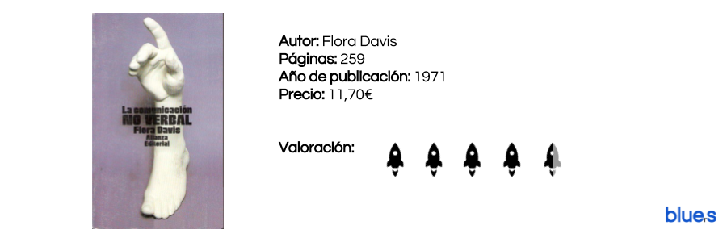

Cómo dominar el arte de la persuasión
by Luis Morales
Publicado 28/02/2017

“Los mayores cambios en el transcurso de la humanidad han sido impulsados por individuos con un gran dominio del proceso de persuasión”
En la hoja de apuntes que usamos para las reviews, concrétamente y lógicamente en la desaprovechada hoja destinada a este libro, hay escrito un apunte en rojo y rodeado varias veces con vehemencia: “cháchara para vendedores”. Lo sentimos, no nos gusta actuar de críticos frustrados de cine o teatro, pero este libro es de todo menos instructivo; quieres ser un vendedor voraz y amoral, adelante haga lo que encuentra en esta páginas.
Leer másLa comunicación no verbal
by Luis Morales
Publicado 09/03/2017

Uno de esos imprescindibles que año tras año, como el buen vino, mejora y demuestra su intangible valor. No hay otro libro, a nuestro modo de ver, que mejor explique y aborde la comunicación no verbal.
46 años después seguimos volviendo una y otra vez a esta joya que la buena de Flora Davis quiso regalar al mundo. Una ciencia nueva por esos años, revolucionaria y con la que seríamos capaces de pillar al mentiroso, saber de una vez cuando lanzarnos a dar un beso y cuando callarnos; la cinesis iba a revolucionar el mundo.
Leer másCómo ganar amigos e influir sobre las personas
by Luis Morales
Publicado 18/02/2017

“Cualquier tonto puede criticar, censurar y quejarse, y casi todos los tontos lo hacen. Pero se necesita carácter y dominio de sí mismo para ser comprensivo y capaz de perdonar”
Uno de esos libros que te pueden cambiar sinceramente la vida. No hay otro igual. Es innegable que la pluma de Dale Carnegie rara vez falla y no nos hace reflexionar sobre nuestra tabla de valores, este, por supuesto no es una excepción. Habrá más libros sobre empatía, persuasión, libros para convertirse en un vendedor eficaz y libros de autoayuda, pero nosotros podemos asegurar y aseguramos que jamás habrá un ensayo tan certero y valioso como este.
Leer másBuscar
Categorías
En estos días, la bibliografía orientada al mundo del emprendimiento parece la gallina de los huevos de oro. Todo el mundo es experto y todas las instituciones creen saber el secreto del éxito.
Este Blog está creado por y para emprendedores, con el firme objetivo de separar la paja del grano y poner sobre la mesa aquellos libros que realmente creemos dignos de ser leídos y aquellas herramientas genuinamente valiosas para el emprendedor.